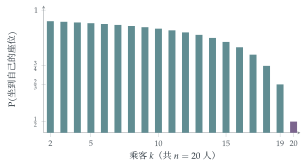

STEP II 2021，第 11 题
继续之前，请先阅读题目（原题为英文）。题目载于 OCR 提供下载的 2021 年 STEP 试卷（zip 文件）内的 STEP II 试卷： www.ocr.org.uk/Images/696588-2021-past-papers.zip
引子
一百名乘客登上一班满座的飞机。第一位乘客遗失了登机证，于是随便找个座位坐下。其后每位乘客，若自己的座位仍然空着就坐自己的座位，否则就在余下的空位中随机选一个。最后一位乘客坐到自己座位的概率（probability）是多少？混乱或会蔓延至整架飞机，所以你可能预期这个概率很小；又或者大部分乘客根本不受影响，概率应该接近 \(1\)。
无论乘客人数是多少，答案都恰好是 \(\frac12\)。本题以递推关系（recurrence）和归纳法（induction）证明这个结果。不过，还有一个利用对称性（symmetry）的漂亮论证，一句话就能说完；它解释了为甚么答案是 \(\frac12\)，更可让你立即写出任何一位乘客的答案。
动笔之前
列出所有可能发生的情况，求出 \(P_2\) 和 \(P_3\)。
若有两个座位，\(T_1\) 会坐 \(S_1\)（这时 \(T_2\) 坐到 \(S_2\)）或 \(S_2\)，两者的概率各为 \(\frac12\)：\(P_2 = \frac12\)。若有三个座位：如果 \(T_1\) 坐 \(S_1\)（概率为 \(\frac13\)），人人都没有问题；如果 \(T_1\) 坐 \(S_3\)，\(T_3\) 就坐不到自己的座位；如果 \(T_1\) 坐 \(S_2\)，则 \(T_2\) 要在 \(S_1\) 和 \(S_3\) 之间随机选择，而 \(T_3\) 只有在 \(T_2\) 选中 \(S_1\) 时才没有问题。所以 \(P_3 = \frac13 + \frac13\cdot\frac12 = \frac12\)。
逐步解题
阶段 1 递推关系
假设 \(T_1\) 坐了 \(S_k\)，其中 \(2 \leq k \leq n - 1\)。乘客 \(T_2, \ldots, T_{k-1}\) 会怎样？当 \(T_k\) 到达时，哪些座位是空的？这个局面与一列较小的列车相比又如何？
乘客 \(T_2, \ldots, T_{k-1}\) 发现自己的座位空着，便坐了下来。当 \(T_k\) 到达时，空着的座位是 \(S_1\) 和 \(S_{k+1}, \ldots, S_n\)：共有 \(n - k + 1\) 个。\(T_k\) 从中随机选一个，此后每位乘客若自己的座位空着就坐自己的座位，否则就随机选一个。这正是有 \(n - k + 1\) 个座位的原来问题，\(T_k\) 扮演第一位乘客的角色，而 \(S_1\) 则扮演 \(T_k\)“自己的”座位的角色（即一旦被选中，一切便回复正常的那个座位）。因此，\(T_n\) 坐到 \(S_n\) 的条件概率（conditional probability）是 \(P_{n-k+1}\)。
现在按 \(T_1\) 所坐的座位分情况考虑，每个座位的概率都是 \(\frac1n\)：坐 \(S_1\) 必定成功，坐 \(S_n\) 必定失败，而坐 \(S_k\) 则给出 \(P_{n-k+1}\)。所以 \[P_n = \frac1n\Bigl(1 + 0 + \sum_{k=2}^{n-1}P_{n-k+1}\Bigr) = \frac1n\Bigl(1 + \sum_{r=2}^{n-1}P_r\Bigr). \qed\]
阶段 2 答案
\(P_2 = P_3 = \frac12\)。猜出 \(P_n\)，并用强归纳法（strong induction）证明。
断言：对所有 \(n \geq 2\)，\(P_n = \frac12\)。当 \(n = 2\) 时断言成立。若 \(P_r = \frac12\) 对 \(2 \leq r \leq n - 1\) 成立，则 \[P_n = \frac1n\Bigl(1 + \frac{n - 2}{2}\Bigr) = \frac1n\cdot\frac n2 = \frac12. \qed\]
阶段 3 倒数第二位乘客
试找一个更巧妙的论证。到最后，留给 \(T_n\) 的是哪个座位？有可能是 \(S_2\) 吗？
最后留给 \(T_n\) 的座位不是 \(S_1\) 就是 \(S_n\)。它不可能是 \(S_k\)（其中 \(2 \leq k \leq n - 1\)），因为 \(T_k\) 早就会把它坐了。而在此之前的每一次随机选择，对 \(S_1\) 和 \(S_n\) 都是对称的：每当有被占了座位的乘客要选位，\(S_1\) 和 \(S_n\) 被选中的机会均等。两者之中先被选中的那个决定了结局，所以两者同样可能成为最后剩下的座位：\(P_n = \frac12\)。
同一个论证适用于任何一位乘客 \(T_k\)，\(k \geq 2\)。只有当某位较早的乘客占了 \(T_k\) 的座位，他们才会失去自己的座位。座位被占的连锁反应会一直持续，直至有人选中 \(S_1\) 为止；在 \(S_1, S_k, S_{k+1}, \ldots, S_n\) 这些座位之中，\(T_k\) 到达之前的选位者对它们一视同仁，所以最先被选中的座位同样可能是这 \(n - k + 2\) 个座位中的任何一个，而 \(T_k\) 只有在最先被选中的是 \(S_k\) 时才会失去座位。所以 \[\mathrm{P}(T_k \text{ 坐在 } S_k) = \frac{n - k + 1}{n - k + 2}.\] 当 \(k = n - 1\)（其中 \(n \geq 3\)）时，这给出 \(Q_n = \frac23\)；而 \(Q_2 = \frac12\)，因为这时 \(T_{n-1} = T_1\)，他们坐在 \(S_1\) 的概率是 \(\frac12\)。■

回顾
化为较小的同类问题。在 \(T_1\) 坐了 \(S_k\) 之后，余下的问题就是座位较少的同一个问题。
强归纳法。递推关系牵涉所有较小的情况，所以归纳时要假设结果对所有这些情况都成立。
找出对称性。座位 \(S_1\) 和 \(S_n\) 自始至终可以互换，这样不用任何代数运算就解释了 \(\frac12\) 的由来。
背后的数学
对称论证
第二个证明体现了概率论中一个威力强大的想法：若两个结果可由随机过程的某种对称性互相对应，它们的概率就相同。这里的过程在 \(S_1\) 和 \(S_n\) 其中一个被选中之前，并不区分这两个座位，所以两者成为最后剩下的座位的可能性必定相等。对称论证往往只凭一个观察，就能取代冗长的计算。接下来的几节有很多这样的例子：第 12.6 节 中多掷一次硬币，第 12.7 节 中的淘汰赛抽签。
有多少位乘客被迫换位？
被迫换位的乘客（即坐不到自己座位的乘客）的数目同样有很好的规律。\(T_1\) 除非选中 \(S_1\)，否则就算是换了位；而 \(T_k\)（其中 \(k \geq 2\)）被迫换位的概率是 \(\frac{1}{n - k + 2}\)。把这些概率相加，被迫换位的乘客数目的期望值（expected number）是 \[\Bigl(1 - \frac1n\Bigr) + \Bigl(\frac1n + \frac{1}{n - 1} + \cdots + \frac12\Bigr) = H_n - \frac1n,\] 大约是 \(\ln n\)：即使飞机上有 \(300\) 个座位，这场混乱平均也只影响约六位乘客。调和数（harmonic numbers）又再出现了（第 9.11 节）。
思维技巧
如果随机过程无法分辨两个结果，它们的可能性就相等。找出它们最初变得可以分辨的那一刻。
在大学，对称论证在概率论中随处可见，由反射原理（reflection principle）（第 9.10 节）到可交换性（exchangeability）皆是；可交换性是指一列随机变量（random variables）无论以任何次序排列都有相同的分布，这个性质是不少现代统计学的基础。
延伸练习
两位健忘的乘客。如果最先的两位乘客都随机选位，最后一位乘客坐到自己座位的概率是多少？
被迫换位的乘客。列出所有可能情况，验证 \(n = 3\) 时被迫换位的乘客数目的期望值。
迂回的路线。利用递推关系，证明 \(\sum_{r=2}^{n-1}P_r = \frac{n - 2}{2}\) 与对称论证互相吻合。
最后一个座位。证明在最后一位乘客坐不到自己座位的条件下，最后一位乘客坐到 \(S_1\) 的概率是 \(1\)。为甚么？
延伸阅读
Peter Winkler, Mathematical Puzzles: A Connoisseur’s Collection（A K Peters）。收录了飞机座位谜题，以及许多其他可用对称性解决的谜题。
Frederick Mosteller, Fifty Challenging Problems in Probability（Dover）。一本经典的题集。
Joseph Blitzstein & Jessica Hwang, Introduction to Probability（CRC Press；可于网上免费阅览）。